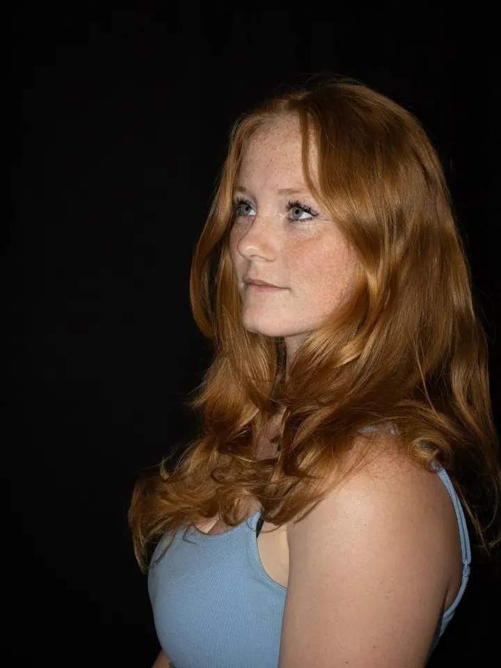
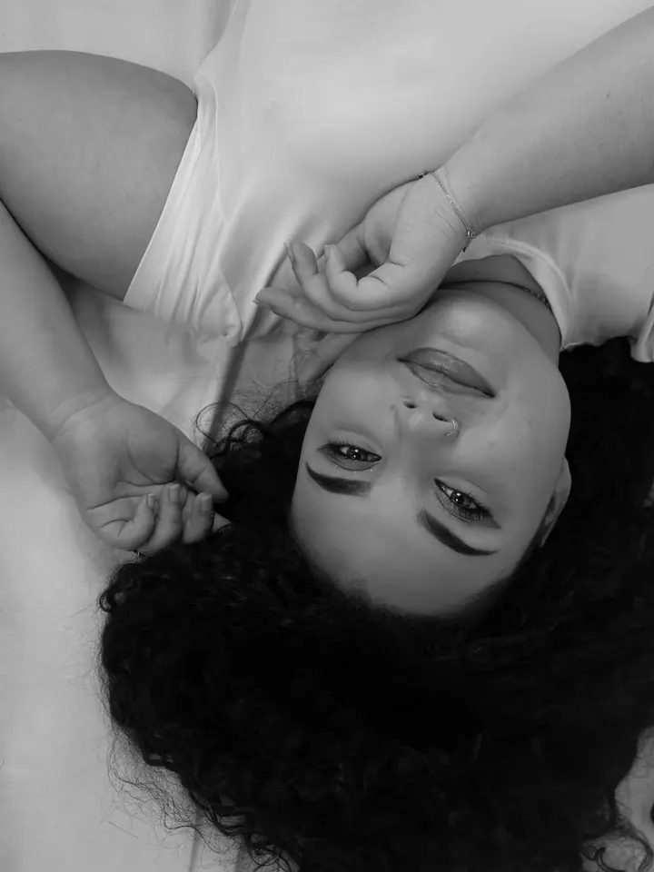

Portrétové focení
Hodinové focení venku nebo v ateliéru, jen vy a fotoaparát. Cena 800 Kč.

Portrétní a rodinná fotografka
Jmenuji se Zuzana Černohorská, ale klidně mi říkejte Zuzko. Fotím portréty, páry, rodiny a děti i těhotenské focení. Působím v Benešově u Prahy a s fotoaparátem vyrážím do přírody i do interiérů.
Zeptat se na termín
Hodinové focení venku nebo v ateliéru, jen vy a fotoaparát. Cena 800 Kč.
Jedna až dvě hodiny focení venku nebo v ateliéru. Dostanete 15 upravených fotografií barevně i černobíle, cena 1200 až 1500 Kč podle počtu lidí.
Focení pro dva na hodinu až hodinu a půl, venku nebo v ateliéru. Cena 1200 Kč.
Jsem fotografka z Benešova u Prahy a nejvíc mě baví zachytit skutečné emoce: smích, který nejde zahrát, pohled, který něco říká, nebo malou ručičku v dlani rodiče.
Fotím na Canon EOS R10, venku v přírodě i v interiérech a v ateliéru. Ráda pracuji se světlem a stínem a fotky vám ráda dám barevně i černobíle, aby si každá chvíle našla tu svou podobu.
Každou fotografii, kterou ode mě dostanete, sama upravuji, a proto neupravené snímky neposílám. Když se budete chtít domluvit, napište mi zprávu na Instagram nebo e-mail. Budu se na vás těšit.
Ozvěte se přes zprávu na Instagramu nebo e-mailem a řekněte mi, jaké focení si přejete.
Společně vybereme, jestli budeme fotit venku v přírodě, nebo v interiéru či ateliéru v okolí Benešova.
Podle typu focení máme hodinu až dvě. Nikam nespěcháme, takže je čas se uvolnit a užít si to.
Vybrané fotky pečlivě upravím a pošlu vám je. U rodinného focení je dostanete barevně i černobíle.
V Benešově u Prahy a okolí. Fotím venku v přírodě i v interiérech nebo v ateliéru, záleží na tom, co je vám bližší.
Portrétové focení 800 Kč, párové 1200 Kč, těhotenské 1000 Kč a rodinné 1200 až 1500 Kč podle počtu lidí.
Rodinný balíček obsahuje 15 upravených fotografií, každou barevně i černobíle. Každá další upravená fotografie nad rámec balíčku stojí 100 Kč.
Ne, neupravené fotografie neposkytuji. Ke každé fotce, kterou ode mě dostanete, si sednu a upravím ji.